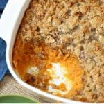

Easy Sweet Potato Casserole

Prep Time
15 mins
Cook Time
40 mins
Total Time
55 mins
This East Sweet Potato Casserole is a must-make for the holidays. It is super simple, super yummy and it can be made in advance!
- Course: Side Dish
- Cuisine: American
- Keyword: Easy Sweet Potato Casserole
- Servings: 8
- Calories: 551 kcal
- Author: Brandie @ The Country Cook
Ingredients
For the casserole:
- 1 29 ox can sweet potatos drained
- 1/2 cup salted butter melted
- 1/3 cup milk
- 3/4 cup sugar
- 1 tsp vanilla extract
- 2 eggs beaten
For the topping:
- 5 tbsp salted butter melted
- 2/3 cup brown sugar
- 2/3 cup flour
- 1 cup chopped pecans
Instructions
- Preheat oven to 350f degrees. In a large bowl, mash the sweet potatoes and stir in melted butter, milk, sugar, vanilla extract and beaten Eggland's Best eggs. Stir until combined well.
- Pour sweet potato mixture into a 2-quart (8-inch square) baking dish.
- In a bowl, combine the melted butter, brown sugar, flour and chopped pecans. Uses a fork or your fingers until mixture becomes small crumbles.
- Srinkle crumbles over sweet potato mixture.
- Bake uncovered for 30-40 minutes until topping is golden brown. Let casserole cool for at least 15-20 minutes before serving. This is important as the casserole will set-up as it cools.